Q1 · Paper study · 01
Which microscopic information controls heat current?
A local thermal description can predict current while missing much of the collision response.
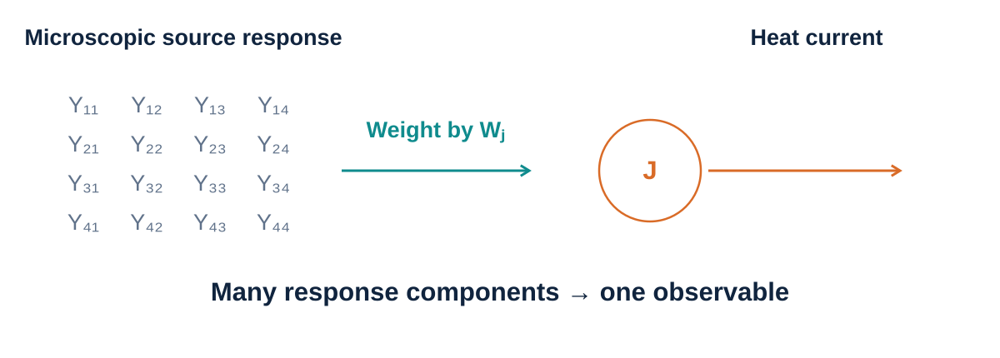
The key test is the effect of the missing information on transport.
A local thermal description can predict current while missing much of the collision response.

The key test is the effect of the missing information on transport.
Keep the equilibrium lattice response; simplify the driven fluctuation sources.
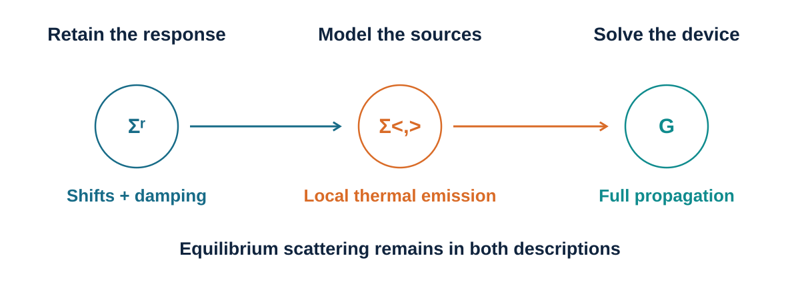
The approximation compresses the nonequilibrium response, not all scattering physics.
The same source error can have very different consequences for an observable.
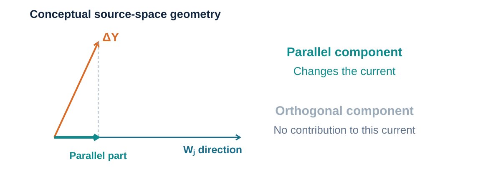
A large source norm does not by itself imply a large current error.
Anharmonic scattering lowers conductance substantially, yet the thermal result remains close.
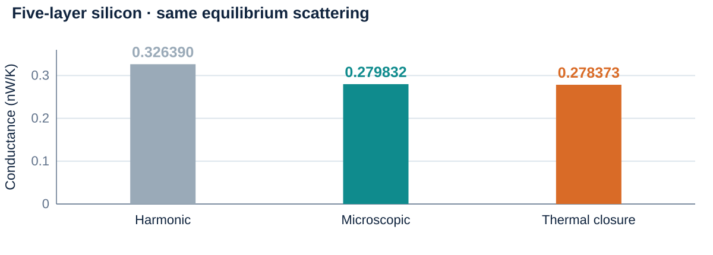
Thermal-closure conductance error: 0.521%.
The collision-source field is much less accurate than the terminal conductance.
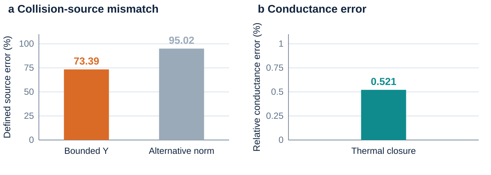
73.39% source mismatch coexists with only 0.521% conductance error.
Exact source-to-current attribution identifies how the mismatch loses influence.
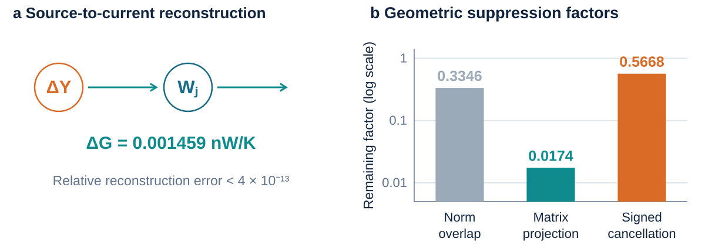
Matrix projection suppresses the error far more than signed cancellation.
Different internal-branch drives select almost the same long-wavelength conductivity.
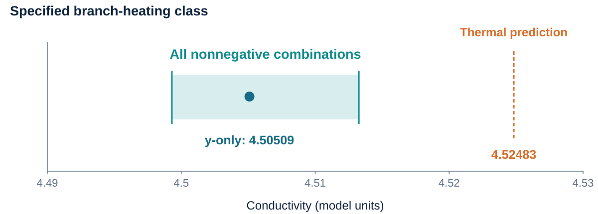
The specified heating class spans only 0.3104% in conductivity.
A symmetry suppresses the source correction that could change leading heat flow.
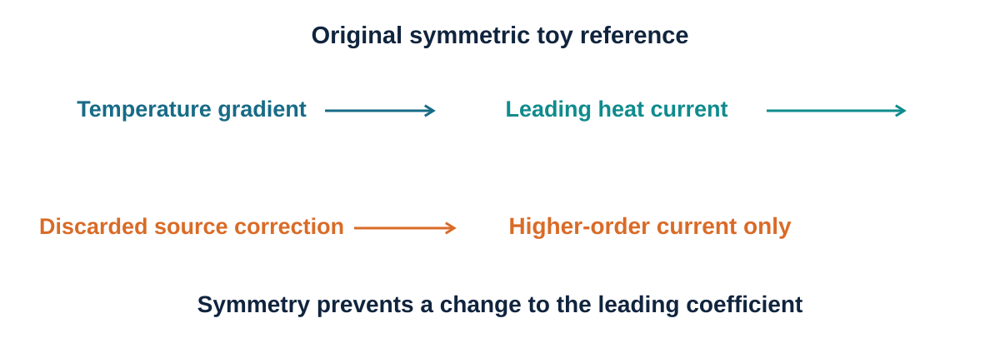
The discarded term does not change the leading Fourier coefficient in this model.
Internal-mode mixing makes a previously suppressed correlation relevant to current.
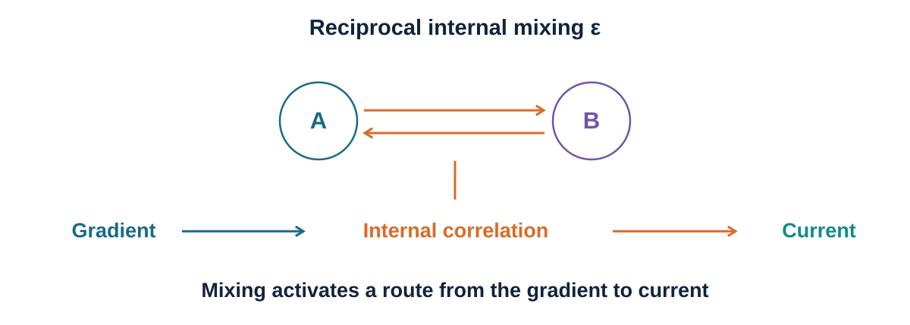
Quadratic forecast at ε = 0.01: 47.3% deviation fails the 5% target.
Calculate one amplitude by projecting the microscopic source equation.
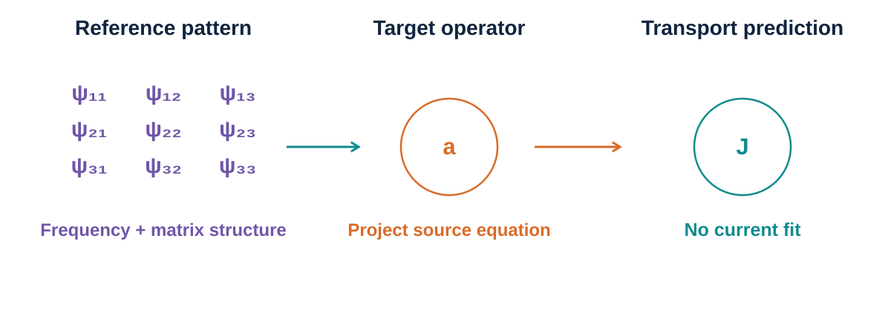
The amplitude comes from the source equation, not a fit to conductivity.
The held-out prediction is recorded before the full target response is evaluated.
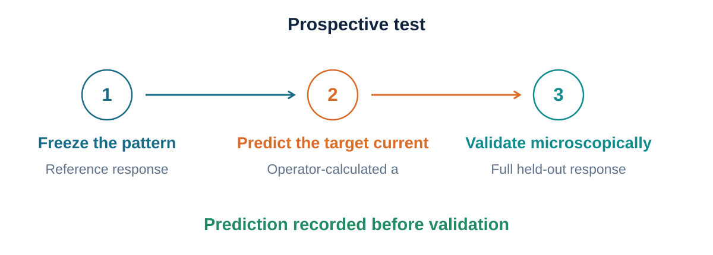
No held-out conductivity is used to fit the prediction.
The corrected transport error remains well below the thermal-closure error.
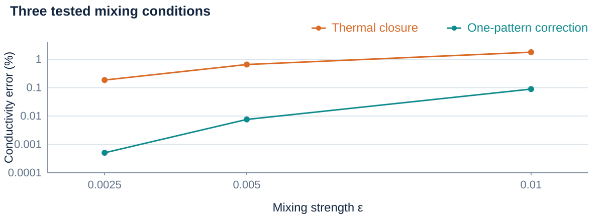
Both held-out conditions retain accurate conductivity.
At ε = 0.01, the correction captures about 95% of the thermal model’s missing contribution.
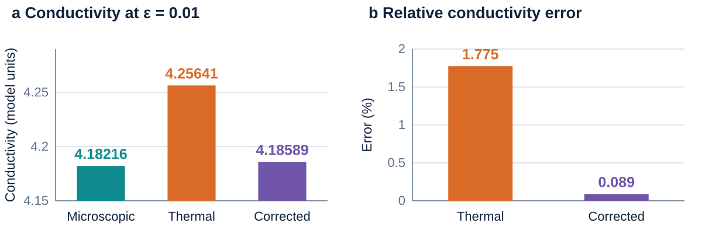
Conductivity error falls from 1.775% to 0.0891%.
Copying the pattern without updating its amplitude leaves a much larger error.
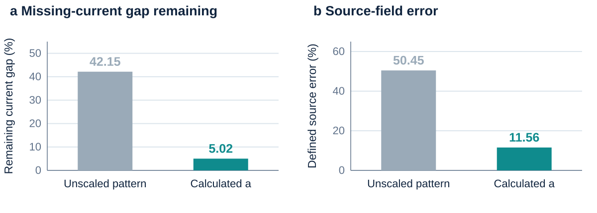
Remaining current gap: 42.15% → 5.02%.
The corrected toy response still has a visible microscopic mismatch.
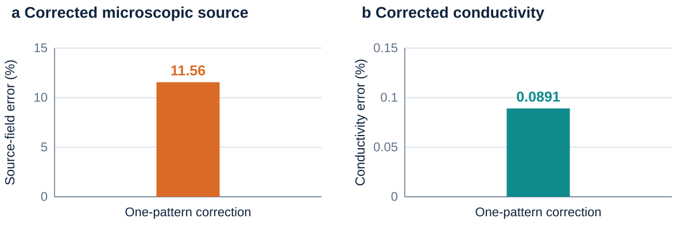
Retain the correlation needed by current; full source recovery is not required here.
The toy model supplies a controlled prediction; silicon supplies a material-based diagnosis.
| Question | Toy model | Silicon model |
|---|---|---|
| Accurate current despite source mismatch | Demonstrated | Demonstrated |
| Physical suppression mechanism | Symmetry and mixing | Weak matrix projection |
| Prospective one-pattern repair | Passed tested cases | Not yet demonstrated |
The common finding is current selectivity, not an identical mechanism.
A useful transport closure needs a physical criterion for the missing current-relevant response.
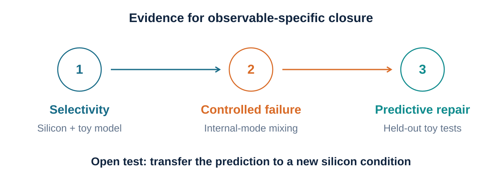
Next scientific test: predict the important correlation in a new silicon condition.